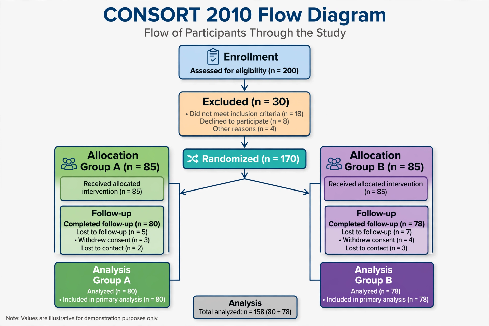

Randomized controlled trial
| Randomized controlled trial | |
|---|---|
 | |
| Field | Clinical research, epidemiology, evidence-based medicine, social science |
| Key features | Random allocation, control group, often blinding and placebo control |
| Reporting standard | CONSORT statement |
A randomized controlled trial (RCT) is a type of experiment in which participants are randomly assigned to two or more groups, one receiving the intervention under study and the other(s) serving as a control — receiving no treatment, standard treatment, or a placebo. Because randomisation balances known and unknown confounders between groups in expectation, RCTs are considered the gold standard for estimating causal effects of interventions, especially in clinical trials of drugs and medical procedures.
Design
Key design elements include a defined study population with eligibility criteria, random allocation (often stratified or blocked), follow-up for pre-specified outcomes, and analysis by intention-to-treat. Blinding — of participants, clinicians, or outcome assessors — reduces performance and detection bias; trials may be single-, double- or triple-blind. Sample size is set in advance to give adequate statistical power to detect a clinically meaningful effect.
History
Early precursors include James Lind's 1747 scurvy experiment aboard HMS Salisbury, though without randomisation. The modern RCT is usually dated to the 1948 Medical Research Council trial of streptomycin for tuberculosis, designed with statistician Austin Bradford Hill, which used random allocation generated from random number tables and sealed envelopes. RCTs subsequently became central to drug regulation, notably after the 1962 Kefauver–Harris amendments in the United States required evidence of efficacy from "adequate and well-controlled investigations".
Uses beyond medicine
Randomised experiments are now standard in development economics, education, criminology and policy evaluation, and in industry as A/B tests. Their use in economics was recognised by the 2019 Nobel Memorial Prize awarded to Abhijit Banerjee, Esther Duflo and Michael Kremer.
Limitations and criticism
RCTs can be expensive and slow, may enrol populations unrepresentative of real-world patients (limiting generalisability), and can be underpowered for rare or long-term harms. Ethical constraints prevent randomising some exposures. Critics also note publication bias and the risk that average effects conceal heterogeneity between subgroups.